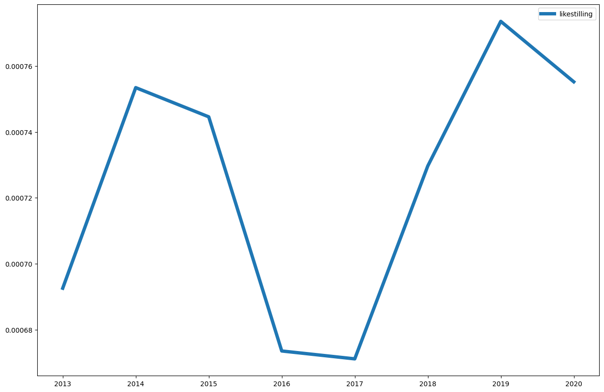

Søk i aviser
Contents

1.7. Søk i aviser#
Aviser skiller seg litt fra bøker ved at de utkommer daglig, sånn at datoer er en viktig del i konkordanser og kollokasjoner.
import dhlab.nbtext as nb
import dhlab as dh
from dhlab import Corpus, totals, Collocations, NgramNews, Ngram
1.7.1. Referansedata#
frekvenslisten for de 50000 meste frekvente i Bokhylla bøker.
tot = totals(50000)
tot.head(5)
| freq | |
|---|---|
| . | 7655423257 |
| , | 5052171514 |
| i | 2531262027 |
| og | 2520268056 |
| - | 1314451583 |
1.7.2. Bygge korpus fra aviser#
korpus = Corpus(doctype="digavis", title="aftenposten", from_timestamp="19940101", to_timestamp="19940301", limit=20)
1.8. Konkordanser#
korpus.conc(words="langrenn").show()
| link | concordance | |
|---|---|---|
| 62 | URN:NBN:no-nb_digavis_aftenposten_null_null_19940129_135_48_1 | ... Vinterqull Motn med Ivar Formo , guNvinner på 50 km langrenn 1 1976 1 Innsbruck . 20.00 : Aktuelt og... |
| 1 | URN:NBN:no-nb_digavis_aftenposten_null_null_19940103_135_2_1 | Langrenn BUL-sprlnten ( også norgescup ) langrenn ssndag : 10 km klassisk menn : 1 ) Vegard Ulvang , Kirkenes... |
| 99 | URN:NBN:no-nb_digavis_aftenposten_null_null_19940214_135_74_1 | ... orgenprogram . 10.15 - 13.00 : OS Liilehammer . Langrenn : 30 km friteknikk , menn . 13.55 - 15.20... |
| 153 | URN:NBN:no-nb_digavis_aftenposten_null_null_19940227_135_97_1 | ... menn . 1 . omgang . 1 0.00 : Langrenn 50 km klassisk menn . 13.00 : Slalåm menn .... |
| 49 | URN:NBN:no-nb_digavis_aftenposten_null_null_19940123_135_37_1 | ... Russland 11.4 , Langrenn NM lerdag , S km klassisk kvinner ; 1 ) Katrine Rokke . Stjørdals Blink 1442.7... |
| 15 | URN:NBN:no-nb_digavis_aftenposten_null_null_19940114_135_23_2 | ... . 15.30 : Skøyteløp verdenscup . 16.30 : Langrenn verdenscup . Langrenn 1 5 km menn , Holmenkollen . 18.00... |
| 55 | URN:NBN:no-nb_digavis_aftenposten_null_null_19940129_135_48_1 | ... fra Oslo — VINTER- FERIE BØ HOTELL Masse snø og tlutte torholcl for alpin og langrenn . langrennsløyper fm hotellet .... |
| 118 | URN:NBN:no-nb_digavis_aftenposten_null_null_19940219_135_84_1 | ... 24 / 2 langrenn 30 km < - høystb.T , 63 98 18 05 , k1 , 18 - 20... |
| 149 | URN:NBN:no-nb_digavis_aftenposten_null_null_19940227_135_97_1 | ... Olympisk morgen . 08.00 : Kunstløp . 10.00 : Langrenn og bob . 50 km klassisk , menn . Firemannsbob... |
| 152 | URN:NBN:no-nb_digavis_aftenposten_null_null_19940227_135_97_1 | ... OS Lillehammer . Alpint : Slalåm , menn . Langrenn : 50 km , klassisk , menn . 11.45 -... |
1.8.1. Kollokasjon#
coll = korpus.coll("langrenn").sort()
coll
| counts | |
|---|---|
| , | 205 |
| . | 205 |
| km | 62 |
| og | 57 |
| i | 51 |
| ... | ... |
| diskutert | 1 |
| disse | 1 |
| div. | 1 |
| do | 1 |
| egnet | 1 |
1021 rows × 1 columns
1.8.2. Sammenligne med referanse#
(coll.frame.counts / tot.freq).sort_values(ascending = False).head(20)
Kombinert 0.000023
Utfor 0.000021
Grenoble 0.000017
komb 0.000017
hockey 0.000017
13.2 0.000015
Rokke 0.000015
x5 0.000013
fristil 0.000012
bill. 0.000011
Vakkert 0.000010
Langrenn 0.000010
kv. 0.000009
trønderen 0.000009
roing 0.000009
Brå 0.000009
Vikingskipet 0.000009
Samsending 0.000009
alpint 0.000009
olympisk 0.000009
dtype: float64
1.8.3. Ngram#
Ngram(words=["likestilling"], doctype="digavis", from_year=2010, to_year=2020).plot(lw = 5)

at = NgramNews(
words=["likestilling"],
title="aftenposten",
from_year=1980,
to_year=2000
)
bt = NgramNews(
words=["likestilling"],
title="bergenstidende",
from_year=1980,
to_year=2000
)
(at.ngram / bt.ngram).plot(lw=5)
<Axes: >
Tilbake til DHLAB ved Nasjonalbiblioteket